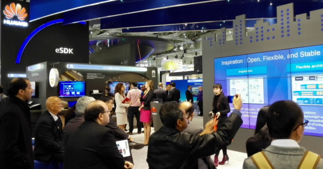

[德国，汉诺威，2015年3月25日] 华为在全球规模最大的ICT科技展会CeBIT上，展出了eSDK(ecosystem Software Development Kit)能力开放平台。eSDK基于华为提供一站式ICT基础设施构建全连接世界的愿景，eSDK通过提供灵活易用的开发工具，便捷的开发支持服务，助力开发者激发灵感，聚焦方案创新，简化实现过程，联手打造切实满足行业客户需求的解决方案。
面对众多的行业客户特性化需求和华为ICT基础设施的丰富能力，开发者可以通过eSDK作为统一的能力开放平台，不必再关注具体的技术细节，而是利用自身了解各个行业客户业务需求的优势，专注于对开放能力的组合与调用，聚焦方案领先，开创市场抢占先机。展会上，通过生动的视频和Flash介绍，参展人员和来自欧洲，非洲，中东和亚洲的客户充分交流了eSDK的灵活性与稳定性。
在现场，通过远程连接在苏州的eSDK实验室，向参展客户实际演示了eSDK的多种应用。该实验室部署了全套的设备环境，可以支持开发者随时随地接入，让开发者实现了零资金投入的项目启动。通过远程连接的eSDK IDE，让开发者体验一键式的下载，服务连接、工程创建、配置、调试等极简的开发过程。

eSDK开发部部长唐九洲在进行eSDK的公开演讲
展会期间，华为公司eSDK开发部部长唐九洲做了名为“Paving the Way for Innovation”的公开演讲，展示了eSDK对开发者的互动支持：依托华为可以信赖的ICT基础设施，构建不同产品的能力组合平台，助力开发者的灵感激发演变为实用的方案创新，并提供完善的激励政策，联合开拓市场。
华为eSDK致力于和广大开发者基于对客户的深度理解，联合开发出具有创新力的解决方案。在展台上， eSDK和众多合作伙伴联合推出LOGO墙; 在未来，华为期待为更多伙伴所了解和熟悉，达成双方长期的合作共赢。
报名文档.doc 大学生创业大会报名须知.doc 报名文档.doc 大学生创业大会报名须知.doc 报名文档.doc 大学生创业大会报名须知.doc